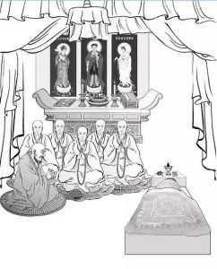

助念者以清净心、悲悯心，在临终者或亡者面前，观想十方诸佛放光加持，自他切莫哭泣等。若条件允许，则应于亡者头顶上方，摆设佛像、佛经等三宝所依，并供养灯、水、香、花、果等。之后与大众一起念诵：

一、皈依(三遍)
南无革热雅(皈依上师)
南无布达雅(皈依佛)
南无达玛雅(皈依法)
南无僧嘎雅(皈依僧)
二、发四无量心(一遍)
愿诸众生永具安乐及安乐因；
愿诸众生永离众苦及众苦因；
愿诸众生永具无苦之乐、我心怡悦；
愿诸众生远离贪嗔之心、住平等舍。
三、发四弘誓愿(一遍)
众生无边誓愿度，烦恼无尽誓愿断，
法门无量誓愿学，佛道无上誓愿成。
四、三十五佛忏悔文(一遍)
南无皈依十方尽虚空界一切诸佛
南无皈依十方尽虚空界一切尊法
南无皈依十方尽虚空界一切贤圣僧
南无如来，应供，正遍知，明行足，善逝，世间解，无上士调御丈夫，天人师，佛，世尊。
南无释迦牟尼佛 南无金刚不坏佛
南无宝光佛 南无龙尊王佛
南无精进军佛 南无精进喜佛
南无宝火佛 南无宝月光佛
南无现无愚佛 南无宝月佛
南无无垢佛 南无离垢佛
南无勇施佛 南无清净佛
南无清净施佛 南无娑留那佛
南无水天佛 南无坚德佛
南无旃檀功德佛 南无无量掬光佛
南无光德佛 南无无忧德佛
南无那罗延佛 南无功德华佛
南无莲花光游戏神通佛 南无财功德佛
南无德念佛 南无善名称功德佛
南无红炎帝幢王佛 南无善游步功德佛
南无斗战胜佛 南无善游步佛
南无周匝庄严功德佛 南无宝华游步佛
南无宝莲华善住娑罗树王佛
如是等一切世界诸佛世尊，常住在世，是诸世尊，当慈念我：若我此生，若我前生，从无始生死以来，所作众罪。若自作，若教他作，见作随喜。若塔若僧，若四方僧物，若自取，若教他取，见取随喜。五无间罪，若自作，若教他作，见作随喜。十不善道，若自作，若教他作，见作随喜。所作罪障，或有覆藏，或不覆藏，应堕地狱、饿鬼、畜生，诸余恶趣，边地下贱及蔑戾车，如是等处。所作罪障，今皆忏悔。
今诸佛世尊，当证知我，当忆念我。我复于诸佛世尊前，作如是言：若我此生，若我余生，曾行布施，或守净戒，乃至施与畜生一抟之食，或修净行，所有善根成就众生，所有善根修行菩提，所有善根及无上智，所有善根一切合集，校计筹量，皆悉回向阿耨多罗三藐三菩提。如过去未来现在诸佛所作回向，我亦如是回向。
众罪皆忏悔，诸福尽随喜，
及请佛功德，愿成无上智。
去来现在佛，于众生最胜，
无量功德海，我今皈命礼。
五、阿弥陀经(一遍)
南无莲池海会佛菩萨 (三称)
佛说阿弥陀经
如是我闻。一时佛在舍卫国，祇树给孤独园。与大比丘僧，千二百五十人俱，皆是大阿罗汉，众所知识：长老舍利弗、摩诃目犍连、摩诃迦叶、摩诃迦旃延、摩诃俱絺罗、离婆多、周利槃陀伽、难陀、阿难陀、罗侯罗、憍梵波提、宾头卢颇罗堕、迦留陀夷、摩诃劫宾那、薄拘罗、阿[9]楼驮，如是等诸大弟子。并诸菩萨摩诃萨：文殊师利法王子、阿逸多菩萨、乾陀诃提菩萨、常精进菩萨，与如是等诸大菩萨。及释提桓因等，无量诸天大众俱。
尔时，佛告长老舍利弗：“从是西方，过十万亿佛土，有世界名曰极乐，其土有佛，号阿弥陀，今现在说法。
舍利弗，彼土何故名为极乐？其国众生，无有众苦，但受诸乐，故名极乐。
又舍利弗。极乐国土，七重栏楯，七重罗网，七重行树，皆是四宝周匝围绕，是故彼国名为极乐。
又舍利弗。极乐国土，有七宝池，八功德水，充满其中，池底纯以金沙布地。四边阶道，金、银、琉璃、玻璃合成。上有楼阁，亦以金、银、琉璃、玻璃、砗磲、赤珠、玛瑙而严饰之。池中莲花大如车轮，青色青光、黄色黄光、赤色赤光、白色白光，微妙香洁。
舍利弗。极乐国土，成就如是功德庄严。
又舍利弗。彼佛国土，常作天乐。黄金为地。昼夜六时，雨天曼陀罗华。其土众生，常以清旦，各以衣裓[10]盛众妙华，供养他方十万亿佛，即以食时，还到本国，饭食经行。
舍利弗。极乐国土，成就如是功德庄严。
复次舍利弗。彼国常有种种奇妙杂色之鸟：白鹤、孔雀、鹦鹉、舍利、迦陵频伽、共命之鸟。是诸众鸟，昼夜六时，出和雅音。其音演畅五根、五力、七菩提分、八圣道分，如是等法。其土众生，闻是音已，皆悉念佛、念法、念僧。
舍利弗。汝勿谓此鸟，实是罪报所生，所以者何？彼佛国土，无三恶道。
舍利弗。其佛国土，尚无三恶道之名，何况有实。是诸众鸟，皆是阿弥陀佛，欲令法音宣流，变化所作。
舍利弗。彼佛国土，微风吹动诸宝行树，及宝罗网，出微妙音，譬如百千种乐，同时俱作。闻是音者，自然皆生念佛、念法、念僧之心。
舍利弗。其佛国土，成就如是功德庄严。
舍利弗。于汝意云何？彼佛何故号阿弥陀？
舍利弗。彼佛光明无量，照十方国，无所障碍，是故号为阿弥陀。
又舍利弗。彼佛寿命，及其人民，无量无边阿僧祇劫，故名阿弥陀。
舍利弗。阿弥陀佛成佛已来，于今十劫。
又舍利弗。彼佛有无量无边声闻弟子，皆阿罗汉，非是算数之所能知。诸菩萨众，亦复如是。
舍利弗。彼佛国土，成就如是功德庄严。
又舍利弗。极乐国土，众生生者，皆是阿鞞跋致，其中多有一生补处，其数甚多，非是算数所能知之，但可以无量无边阿僧祇劫说。
舍利弗。众生闻者，应当发愿，愿生彼国，所以者何？得与如是诸上善人俱会一处。
舍利弗。不可以少善根福德因缘，得生彼国。
舍利弗。若有善男子善女人，闻说阿弥陀佛，执持名号，若一日、若二日，若三日，若四日，若五日，若六日，若七日，一心不乱，其人临命终时，阿弥陀佛，与诸圣众，现在其前。是人终时，心不颠倒，即得往生阿弥陀佛极乐国土。
舍利弗。我见是利，故说此言。若有众生，闻是说者，应当发愿，生彼国土。
舍利弗。如我今者，赞叹阿弥陀佛，不可思议功德之利。东方亦有阿閦鞞佛、须弥相佛、大须弥佛、须弥光佛、妙音佛，如是等恒河沙数诸佛，各于其国，出广长舌相，遍覆三千大千世界，说诚实言：汝等众生，当信是称赞不可思议功德一切诸佛所护念经。
舍利弗。南方世界，有日月灯佛、名闻光佛、大焰肩佛、须弥灯佛、无量精进佛，如是等恒河沙数诸佛，各于其国，出广长舌相，遍覆三千大千世界，说诚实言：汝等众生，当信是称赞不可思议功德一切诸佛所护念经。
舍利弗。西方世界，有无量寿佛、无量相佛、无量幢佛、大光佛、大明佛、宝相佛、净光佛，如是等恒河沙数诸佛，各于其国，出广长舌相，遍覆三千大千世界，说诚实言：汝等众生，当信是称赞不可思议功德一切诸佛所护念经。
舍利弗。北方世界，有焰肩佛、最胜音佛、难沮佛、日生佛、网明佛，如是等恒河沙数诸佛，各于其国，出广长舌相，遍覆三千大千世界，说诚实言：汝等众生，当信是称赞不可思议功德一切诸佛所护念经。
舍利弗。下方世界，有师子佛、名闻佛、名光佛、达摩佛、法幢佛、持法佛，如是等恒河沙数诸佛，各于其国，出广长舌相，遍覆三千大千世界，说诚实言：汝等众生，当信是称赞不可思议功德一切诸佛所护念经。
舍利弗。上方世界，有梵音佛、宿王佛、香上佛、香光佛、大焰肩佛、杂色宝华严身佛、娑罗树王佛、宝华德佛、见一切义佛、如须弥山佛，如是等恒河沙数诸佛，各于其国，出广长舌相，遍覆三千大千世界，说诚实言：汝等众生，当信是称赞不可思议功德一切诸佛所护念经。
舍利弗。于汝意云何？何故名为一切诸佛所护念经？
舍利弗。若有善男子、善女人，闻是经受持者，及闻诸佛名者，是诸善男子、善女人，皆为一切诸佛之所护念，皆得不退转于阿耨多罗三藐三菩提。是故舍利弗，汝等皆当信受我语，及诸佛所说。
舍利弗。若有人已发愿、今发愿、当发愿，欲生阿弥陀佛国者，是诸人等，皆得不退转于阿耨多罗三藐三菩提，于彼国土，若已生、若今生、若当生。是故舍利弗，诸善男子、善女人，若有信者，应当发愿，生彼国土。舍利弗，如我今者，称赞诸佛不可思议功德，彼诸佛等，亦称赞我不可思议功德，而作是言：释迦牟尼佛能为甚难希有之事，能于娑婆国土，五浊恶世，劫浊、见浊、烦恼浊、众生浊、命浊中，得阿耨多罗三藐三菩提。为诸众生，说是一切世间难信之法。
舍利弗。当知我于五浊恶世，行此难事，得阿耨多罗三藐三菩提，为一切世间说此难信之法，是为甚难。”
佛说此经已，舍利弗，及诸比丘，一切世间天人阿修罗等，闻佛所说，欢喜信受，作礼而去。
六、般若波罗蜜多心经(一遍)
观自在菩萨，行深般若波罗蜜多时，照见五蕴皆空，度一切苦厄。舍利子，色不异空，空不异色，色即是空，空即是色。受想行识，亦复如是。舍利子，是诸法空相，不生不灭，不垢不净，不增不减，是故空中无色，无受想行识，无眼耳鼻舌身意，无色声香味触法，无眼界，乃至无意识界，无无明，亦无无明尽，乃至无老死，亦无老死尽。无苦集灭道，无智亦无得，以无所得故。菩提萨埵，依般若波罗蜜多故，心无挂碍。无挂碍故，无有恐怖，远离颠倒梦想，究竟涅槃。三世诸佛，依般若波罗蜜多故，得阿耨多罗三藐三菩提。故知般若波罗蜜多，是大神咒，是大明咒，是无上咒，是无等等咒，能除一切苦，真实不虚。故说般若波罗蜜多咒，即说咒曰：揭谛揭谛，波罗揭谛，波罗僧揭谛，菩提萨婆诃。
七、诵佛菩萨名号(各三遍或七遍)
顶礼、供养、皈依出有坏善逝应供正等觉本师释迦牟尼佛
顶礼、供养、皈依出有坏善逝应供正等觉善名称吉祥王如来
顶礼、供养、皈依出有坏善逝应供正等觉宝月智严光音自在王如来
顶礼、供养、皈依出有坏善逝应供正等觉金色宝光妙行成就如来
顶礼、供养、皈依出有坏善逝应供正等觉无忧最胜吉祥如来
顶礼、供养、皈依出有坏善逝应供正等觉法海雷音如来
顶礼、供养、皈依出有坏善逝应供正等觉法海胜慧游戏神通如来
顶礼、供养、皈依出有坏善逝应供正等觉药师琉璃光如来
顶礼、供养、皈依出有坏善逝应供正等觉西方极乐世界阿弥陀佛
顶礼、供养、皈依文殊菩萨
顶礼、供养、皈依地藏王菩萨
顶礼、供养、皈依弥勒菩萨
顶礼、供养、皈依观世音菩萨
顶礼、供养、皈依除盖障菩萨
顶礼、供养、皈依金刚手菩萨
顶礼、供养、皈依普贤菩萨
顶礼、供养、皈依虚空藏菩萨
顶礼、供养、皈依十方三世一切佛，一切菩萨摩诃萨
八、诵咒(各三遍或七遍或二十一遍)
释迦牟尼佛咒：嗡牟尼牟尼玛哈牟尼耶索哈
金刚萨埵咒：嗡班匝儿萨埵吽
阿弥陀佛咒：嗡阿弥德瓦阿依斯德吽舍
寂猛百尊咒：嗡阿吽 波的智达 嘛哈苏卡加纳 达杜阿 嗡热勒热勒吽久吽
六道金刚咒：啊阿下萨嘛哈
听闻解脱咒：阿比甲当嘎
本觉大密咒：嘛嘛郭林萨敏达
不动佛咒：那莫那札雅雅 嗡刚嘎讷刚嘎讷 若匝讷若匝讷 卓札讷卓札讷 札萨讷札萨讷 札德哈那札德哈那 萨瓦嘎玛巴让m巴讷美 萨瓦萨埵难匝索哈
地藏灭定业咒：唵钵啰末邻陀宁娑婆诃
七佛灭罪咒：离婆离婆帝 求诃求诃帝 陀罗尼帝 尼诃啰帝 毗黎你帝 摩诃伽帝 真陵乾帝 莎婆诃
往生咒：南无阿弥多婆夜 哆他伽多夜 哆地夜他阿弥利都婆毗 阿弥利哆悉耽婆毗 阿弥利哆毗迦兰帝 阿弥利哆毗迦兰多 伽弥腻 伽伽那 枳多迦利娑婆诃
观音菩萨咒(若时间允许，则尽量多念)：嗡嘛呢叭美吽舍
九、经文偈颂(各一遍或三遍)
诸法从缘起，如来说是因，
彼法因缘尽，是大沙门说。
诸恶莫作，诸善奉行，
自净其意，是诸佛教。
一切有为法，如梦幻泡影，
如露亦如电，应作如是观。
十、中阴愿文(莲花生大士造)
(一)向诸佛菩萨求助之愿词(三遍)
在自己即将死亡之际或于平时，应向诸佛菩萨求助。具体内容为：
于三宝前敬献真实圆满供品与意幻供品，手持妙香，并以强烈信心作如下猛厉发愿：
安住十方之诸佛菩萨，具大悲者，具大智者，具明眼者，具大慈者，众生救主，祈以大悲莅临于此，享用此等真实圆满与意幻供养。
汝等大悲圣尊，拥有不可思议之遍知智慧、大慈大悲、所作事业与救护之力。
汝等大悲圣尊，于“某某(亡者姓名)”自此世界前往他方世界，辞别此世、作大迁移、缺失友伴、苦不堪言、无依无怙、举目无亲、此生隐没、投生他道、走进黑暗、惨堕险地、深陷密林，为业所驱、游荡荒野、漂泊重洋、业风吹送、漫无目的、入大沙场、大魔所缠，于阎罗卒生大惊惧，以业堕入来世，不由自主、孤苦伶仃、独自前行之际，愿汝等大悲圣尊为“某某”作无皈依处者之皈依处、怙主、救助者，从中阴幽暗中获得救护，从业力赤风中得以回转，从阎罗大畏惧中得到救援，于中阴大关隘中获得护送。
愿汝等大悲圣尊此时大悲无有枯竭，担当援军，不舍众生于三途，令其不失犯誓言，迅速发出大悲之力。祈请诸佛菩萨为“某某”所发之大悲方便威力永不消减，以大悲摄持，令众生不为恶业所驱。
祈请三宝拯救中阴苦难！
(二)中阴救畏愿词(一遍)
呜呼！ 吾寿引业穷尽时，
此世亲眷无助益，独自踽踽漂中阴，
寂猛佛发悲力已，愿除无明深幽暗。
别离密友孤身行，自境空影现形时，
诸佛发出大悲力，愿无中阴惊怖难。
显现明慧五光时，无畏无惧知自现。
显现寂猛色身时，自信无恐识中阴。
感受恶业苦报时，愿寂猛佛扫诸苦。
法性自声雷鸣时，愿成大乘妙法声。
无怙跟随业行时，愿寂猛佛佑吾等。
感受习气业苦时，愿现明乐三摩地。
化生有之中阴时，愿无颠倒魔授记。
何处以心能至时，愿无恶业迷乱怖。
凶恶猛兽咆哮时，愿成六字之法声。
雨雪风暗所驱时，愿见明慧之天眼。
同类中阴诸有情，愿无妒忌生善趣。
饥渴烦恼交迫时，愿无饥渴寒热苦。
若睹来世父母合，愿见寂怒之父母。
投生自在能利他，愿得相好殊胜身。
吾获来世妙男身，愿见闻者速解脱。
一切恶业不跟随，愿诸福德随且增。
何处投生诸生中，愿见宿世之本尊。
初生通言行念宿，愿得不忘陀罗尼。
大中小之诸功德，愿稍见闻即通达。
生于何处皆吉祥，愿诸众生得安乐。
寂怒佛汝身如何，眷属寿命及刹土，
殊胜善妙相如何，愿我等亦如是成。
普贤寂怒大悲心，法性清净谛实力，
咒师专修之加持，愿所发愿如是成。
(三)中阴度险愿词(一遍)
顶礼上师本尊空行诸尊！祈以大慈作引路，
吾因迷漂轮回时，祈请传承师指引，
不懈闻思修光道，佛母空行做后盾，
祈度中阴怖狭道，送往圆满正觉位。
因猛愚痴轮回时，祈请毗卢遮那佛，
引往法界智光道，空自在母做后盾，
祈度中阴怖狭道，送往圆满正觉位。
因猛嗔恨轮回时，祈请坏有金萨尊，
引往圆镜智光道，佛眼佛母做后盾，
祈度中阴怖狭道，送往圆满正觉位。
因猛傲慢轮回时，祈请宝生佛父尊，
引往等性智光道，玛玛各母做后盾，
祈度中阴怖狭道，送往圆满正觉位。
因猛贪恋轮回时，祈请坏有无量光，
引往妙察智光道，白衣佛母做后盾，
祈度中阴怖狭道，送往圆满正觉位。
因猛嫉妒轮回时，祈请坏有不空成，
引往成作智光道，誓言度母做后盾，
祈度中阴怖狭道，送往圆满正觉位。
因猛习气轮回时，祈请持明勇士尊，
引往俱生智光道，佛母空行做后盾，
祈度中阴怖狭道，送往圆满正觉位。
因猛迷现轮回时，祈请寂猛诸佛尊，
引往遣除怖畏道，怒空自在做后盾，
祈度中阴怖狭道，送往圆满正觉位。
呜呼！
虚空诸界不为敌，愿见蓝色佛刹土；
一切水界不为敌，愿见白色佛刹土；
一切地界不为敌，愿见黄色佛刹土；
一切火界不为敌，愿见红色佛刹土；
一切风界不为敌，愿见绿色佛刹土；
一切虹界不为敌，愿见佛种种刹土；
声光光芒不为敌，愿见寂怒浩瀚刹；
愿知诸声即自声，愿知诸光即自光，
愿知光芒自光芒，愿悟中阴之自性，
愿能现前三身刹。
(四)六中阴根本颂(一遍)
呜呼！
此生中阴现前时，寿命无常断懒惰，
趋入不懈闻思修，现心转道现三身，
仅获此番人身时，绝非悠闲散漫时。
呜呼！
梦之中阴现前时，不作放逸愚躺卧，
无散正念性中住，依梦修炼幻光明，
莫若旁生酣痴眠，应当梦明融合修。
呜呼！
禅定中阴现前时，断除懒散迷乱众，
无散无执离边住，当获稳固二生圆，
弃离琐事专修时，勿受烦恼迷乱牵。
呜呼！
临死中阴现前时，于一切法断贪执，
忆念窍诀无散住。自明迁往无生界，
临离有为血肉身，了知无常幻化性。
呜呼！
法性中阴现前时，于诸现象断畏惧，
认识诸现皆自境，当知悉为中阴相，
将遇重大关要时，莫畏自现寂怒众。
呜呼！
有之中阴现前时，心存专注之期望，
精勤衔接余善业，阻止胎门忆回遮，
乃需真诚净见际，观佛父母断嫉妒。
忽视死亡拖延者，频忙此生无义事，
此生空返极荒谬。真正急需乃正法，
此时此刻何不修？成就上师如此言，
师教若未存自心，岂非自欺自己者？
祈愿至尊三宝救度中阴之剧苦！
十一、略极乐愿文(一遍)
诶玛吙！
奇哉佛陀无量光，右侧至尊观世音，
左侧勇识大势至，无量诸佛菩萨绕。
稀有无量之安乐，名为极乐彼世界，
祈愿我等命终时，不隔他世即往生，
面见彼佛阿弥陀。如是我发之此愿，
祈祷十方佛菩萨，加持无碍得实现。
愿生西方净土中，九品莲花为父母，
花开见佛悟无生，不退菩萨为伴侣。
成就所愿咒：达雅他 班匝治雅阿瓦波达讷耶索哈
十二、普贤行愿品(一遍)
所有十方世界中，三世一切人师子，
我以清净身语意，一切遍礼尽无余。
普贤行愿威神力，普现一切如来前，
一身复现刹尘身，一一遍礼刹尘佛。
于一尘中尘数佛，各处菩萨众会中，
无尽法界尘亦然，深信诸佛皆充满。
各以一切音声海，普出无尽妙言辞，
尽于未来一切劫，赞佛甚深功德海。
以诸最胜妙华鬘，伎乐涂香及伞盖，
如是最胜庄严具，我以供养诸如来。
最胜衣服最胜香，末香烧香与灯烛，
一一皆如妙高聚，我悉供养诸如来。
我以广大胜解心，深信一切三世佛，
悉以普贤行愿力，普遍供养诸如来。
我昔所造诸恶业，皆由无始贪嗔痴，
从身语意之所生，一切我今皆忏悔。
十方一切诸众生，二乘有学及无学，
一切如来与菩萨，所有功德皆随喜。
十方所有世间灯，最初成就菩提者，
我今一切皆劝请，转于无上妙法轮。
诸佛若欲示涅槃，我悉至诚而劝请，
唯愿久住刹尘劫，利乐一切诸众生。
所有礼赞供养福，请佛住世转法轮，
随喜忏悔诸善根，回向众生及佛道。
我随一切如来学，修习普贤圆满行，
供养过去诸如来，及与现在十方佛。
未来一切天人师，一切意乐皆圆满，
我愿普随三世学，速得成就大菩提。
所有十方一切刹，广大清净妙庄严，
众会围绕诸如来，悉在菩提树王下。
十方所有诸众生，愿离忧患常安乐，
获得甚深正法利，灭除烦恼尽无余。
我为菩提修行时，一切趣中成宿命，
常得出家修净戒，无垢无破无穿漏。
天龙夜叉鸠槃荼，乃至人与非人等，
所有一切众生语，悉以诸音而说法。
勤修清净波罗密，恒不忘失菩提心，
灭除障垢无有余，一切妙行皆成就。
于诸惑业及魔境，世间道中得解脱，
犹如莲华不著水，亦如日月不住空。
悉除一切恶道苦，等与一切群生乐，
如是经于刹尘劫，十方利益恒无尽。
我常随顺诸众生，尽于未来一切劫，
恒修普贤广大行，圆满无上大菩提。
所有与我同行者，于一切处同集会，
身口意业皆同等，一切行愿同修学。
所有益我善知识，为我显示普贤行，
常愿与我同集会，于我常生欢喜心。
愿常面见诸如来，及诸佛子众围绕，
于彼皆兴广大供，尽未来劫无疲厌。
愿持诸佛微妙法，光显一切菩提行，
究竟清净普贤道，尽未来劫常修习。
我于一切诸有中，所修福智恒无尽，
定慧方便及解脱，获诸无尽功德藏。
一尘中有尘数刹，一一刹有难思佛，
一一佛处众会中，我见恒演菩提行。
普尽十方诸刹海，一一毛端三世海，
佛海及与国土海，我遍修行经劫海。
一切如来语清净，一言具众音声海，
随诸众生意乐音，一一流佛辩才海。
三世一切诸如来，于彼无尽语言海，
恒转理趣妙法轮，我深智力普能入。
我能深入于未来，尽一切劫为一念，
三世所有一切劫，为一念际我皆入。
我于一念见三世，所有一切人师子，
亦常入佛境界中，如幻解脱及威力。
于一毛端极微中，出现三世庄严刹，
十方尘刹诸毛端，我皆深入而严净。
所有未来照世灯，成道转法悟群有，
究竟佛事示涅槃，我皆往诣而亲近。
速疾周遍神通力，普门遍入大乘力，
智行普修功德力，威神普覆大慈力。
遍净庄严胜福力，无著无依智慧力，
定慧方便威神力，普能积集菩提力，
清净一切善业力，摧灭一切烦恼力，
降服一切诸魔力，圆满普贤诸行力。
普能严净诸刹海，解脱一切众生海，
善能分别诸法海，能甚深入智慧海，
普能清净诸行海，圆满一切诸愿海，
亲近供养诸佛海，修行无倦经劫海。
三世一切诸如来，最胜菩提诸行愿，
我皆供养圆满修，以普贤行悟菩提。
一切如来有长子，彼名号曰普贤尊，
我今回向诸善根，愿诸智行悉同彼。
愿身口意恒清净，诸行刹土亦复然，
如是智慧号普贤，愿我与彼皆同等。
我为遍净普贤行，文殊师利诸大愿，
满彼事业尽无余，未来际劫恒无倦。
我所修行无有量，获得无量诸功德，
安住无量诸行中，了达一切神通力。
文殊师利勇猛智，普贤慧行亦复然，
我今回向诸善根，随彼一切常修学。
三世诸佛所称叹，如是最胜诸大愿，
我今回向诸善根，为得普贤殊胜行。
愿我临欲命终时，尽除一切诸障碍，
面见彼佛阿弥陀，即得往生安乐刹。
我既往生彼国已，现前成就此大愿，
一切圆满尽无余，利乐一切众生界。
彼佛众会咸清净，我时于胜莲华生，
亲睹如来无量光，现前授我菩提记。
蒙彼如来授记已，化身无数百俱胝，
智力广大遍十方，普利一切众生界。
乃至虚空世界尽，众生及业烦恼尽，
如是一切无尽时，我愿究竟恒无尽。
十方所有无边刹，庄严众宝供如来，
最胜安乐施天人，经一切刹微尘劫。
若人于此胜愿王，一经于耳能生信，
求胜菩提心渴仰，获胜功德过于彼。
即常远离恶知识，永离一切诸恶道，
速见如来无量光，具此普贤最胜愿。
此人善得胜寿命，此人善来人中生，
此人不久当成就，如彼普贤菩萨行。
往昔由无智慧力，所造极恶五无间，
诵此普贤大愿王，一念速疾皆消灭。
族姓种类及容色，相好智慧咸圆满，
诸魔外道不能摧，堪为三界所应供。
速诣菩提大树王，坐已降伏诸魔众，
成等正觉转法轮，普利一切诸含识。
若人于此普贤愿，读诵受持及演说，
果报唯佛能证知，决定获胜菩提道。
若人诵此普贤愿，我说少分之善根，
一念一切悉皆圆，成就众生清净愿。
我此普贤殊胜行，无边胜福皆回向，
普愿沉溺诸众生，速往无量光佛刹。
近年来，汉地许多人为亡者助念时，缺乏一套系统完整的念诵仪轨。尽管历来高僧大德们对荐亡超度有诸多教言，但内容大多为持诵阿弥陀佛圣号，不一定能普泽不同根基的众生。鉴于此，本人翻阅大量经续论典后，编集了这一《助念往生仪轨》，其中皆为诸佛菩萨之金刚语，对亡者之利益，绝对真实无欺。
要知道，在亡者临终的有限时间内，对其助念极为关键。《地藏经》云：一切众生，临命终时，若得闻一佛名，一菩萨名，或大乘经典一句一偈。我观如是辈人，除五无间杀害之罪，小小恶业，合堕恶趣者，寻即解脱。
故大家最好能于四十九天内，每天诵此仪轨，尽量行持念佛、放生、吃素等善法。《地藏经》中也说：“若能更为身死之后七七日内广造众善，能使是诸众生永离恶趣，得生人天受胜妙乐。”倘若自己条件具足，还应在此期间，每天念诵《金刚经》、《地藏经》、《极乐愿文》或《闻解脱》等教典，如此则对亡者利益不可估量。
此仪轨念诵简单，且加持无量，无偏适用于显密、藏汉各大宗派，望有缘者莫等闲视之！
释迦沙门索达吉于色达喇荣五明佛学院
2009年12月10日